1. Najpierw nazywamy maszyny najlepiej w jakieś znormalizowanej formie dla łatwości zarządzania nimi.
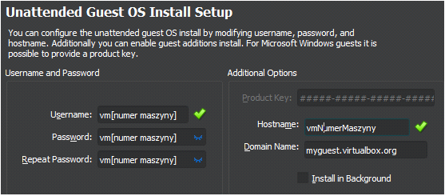2. Wybieramy wersje wersję pierwszą by móc normalnie korzystać z funkcji.
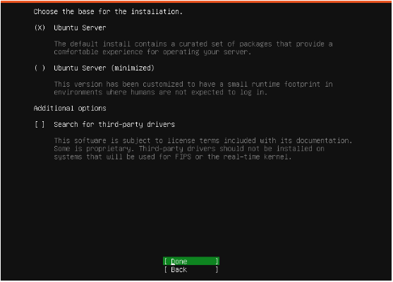3. Teraz ważny jest ten krok ponieważ ustawiamy tutaj hasło sudo, które będziemy wykorzystywać do połączenia ssh.
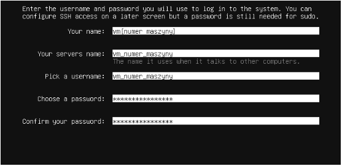4. Teraz możemy wybrać by już przy instalacji zainstalowany został serwer ssh. Można też później zrobić to ręcznie.
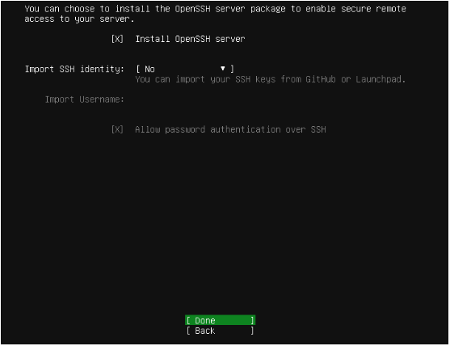5. Teraz możemy zainstalować narzędzie „docker” lub jak wyżej zrobić to później ręcznie.
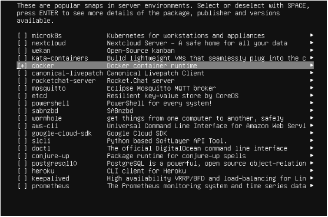6. Po zainstalowaniu systemu trzeba wyłączyć maszynę wirtualną i dodać kartę sieciową.
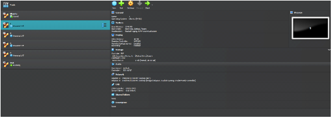7. Wybieramy maszynę która nas interesuje i wybieramy „Settings”.
8. Wchodzimy w zakładkę „Network” i włączamy drugą kartę sieciową. Dodajemy „Host-only Adapter”.
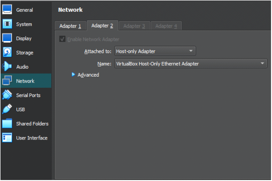9. Najeżdżamy na „File” potem na „Tools” i na końcu wybieramy „Network manager”.
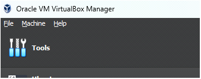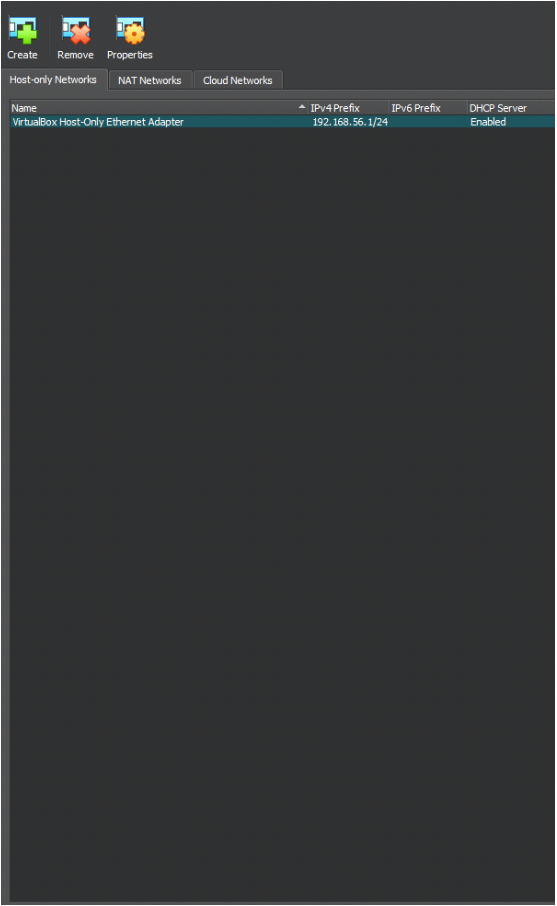
10. W przypadku gdy żadnego nie ma dodajemy za pomocą „Create”. Potem wchodzimy w „Properties” i konfigurujemy serwer dhcp.
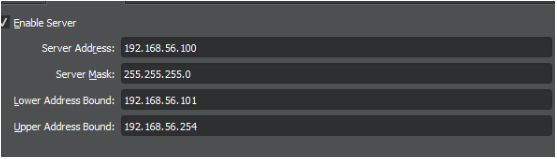11. Z powrotem uruchamiamy maszynę i kolejno wpisujemy komendy:
12. Teraz trzeba skonfigurować kartę sieciową dodaną wcześniej na maszynie wirtualnej.
Poniżej „dhcp4: true” dodać nową linie, wpisać dokładnie 4 spacje i napisać „enp0s8:”. W następnej linii wpisać dokładnie 6 spacji i dodać „dhcp4: true”. Powinno to wyglądać tak:
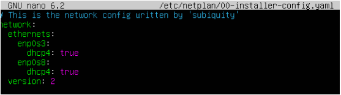Zapisać i wyjść.
13. Potem wpisać komendy:
14. Komendą „ip -br address” sprawdzić czy doszło do przypisania adresu ipv4 i zpingować z innej maszyny wirtualnej poleceniem „ping”.
15. Teraz by połączyć się przez ssh wystarczy wpisać: